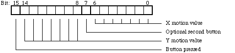
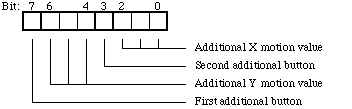
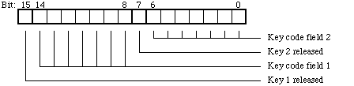
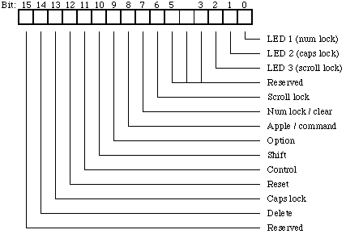

Legacy Document
Important: This document is part of the Legacy section of the ADC Reference Library. This information should not be used for new development.
Current information on this Reference Library topic can be found here:
ADC Home > Reference Library > Technical Notes > Legacy Documents > Hardware & Drivers >
Important: This document is part of the Legacy section of the ADC Reference Library. This information should not be used for new development.
Current information on this Reference Library topic can be found here:
|
The ADB HardwareThe ADB is a simple serial bus with collision detection. A common implementation platform for the protocol is a simple microcontroller: a 2-MHz Motorola 68HC11 has been used with success, although any number of microcontrollers would do a more than adequate job. The 2-MHz clock seemed to be close to minimal for this application; the bus has a relatively low bandwidth, and, given the packet structure, the theoretical maximum bandwidth is on the order of 100 - 200 bytes/second. In practice, the bus is not suitable for data- xtransfer applications; it serves well as a general purpose input device bus, but high data rates will not work well. In general, the timing for the ADB is fairly tolerant of
small variances; however, many Macintoshes are more
demanding than their predecessors. For this reason, devices
should be tested on a wide range of machines; the best test
for compliance is testing. Specifically, the It is important that your device be fairly tolerant of problems on the bus; if a command packet begins but never seems to complete, your device should time out rather than hang. The design of the bus and its connectors means that there can be occasional glitches in the connection with the host, and you should try to be as tolerant of these as possible. Because the ADB bus is open collector, collisions can be detected when a device is attempting to drive the bus high and another device pulls it low. This means that whenever the device is driving the bus high, it should be watching to make sure the bus is actually high; if the bus goes low, some other device is sending at the same time. When a device detects a collision, it should immediately stop transmitting: this means that if two devices are colliding, one of them will detect the collision, while one will not. This occurs because a device can only detect the collision if it is driving the bus high and another device drives it low. The device driving it low has no way to tell that there was a collision, as the bus follows it. Since the detecting device immediately stops transmitting, the other device will not detect the collision. Thus, if there are a number of devices transmitting on the bus, only one of them will complete its transmission without detecting the collision, unless the unlikely occurrence of more than one device transmitting exactly the same data with the same timing occurs, and neither detects the collision. The ADB is not particularly tolerant of devices being connected and disconnected while the bus is live. There isn't any software architecture to detect the presence of new devices or the absence of old ones; furthermore, on some CPUs, the motherboard is not well protected from voltage transients on the ADB connector. Plugging in a device while the Macintosh is powered on could cause damage to the ADB transceiver or other portions of the Macintosh's circuitry. On some portable Macintoshes, the voltage characteristics do not adhere to the ADB specification. Clearly, power is very valuable on all portable computers, so if your device is targeted towards portable use, you should be extremely careful to keep your power consumption as low as possible. While the ADB can supply the full voltage stated in the specification, drawing this much power will lead to much more rapid battery draining. On the PowerBook 140 and 170, there was a specific problem which caused the low-level input voltage to go above the specified maximum of 0.8 volts: it commonly came close to 1.5 volts. This has caused problems for some third-party devices, and it has been corrected on subsequent machines. (There is a recommended service procedure for repairing this problem available from Apple Service representatives, should this be a problem for a user.) Soft PowerOn Macintoshes with software power control, the machine can be turned on by an ADB device. This is accomplished by momentarily connecting pin 2 on the ADB connector (reserved) to pin 4 (ground). Pin 2 should be kept grounded until pin 3 (+5 volts) comes up to power, letting you know that the machine has actually come on. Some Macintoshes do not have soft-power capabilities; on these machines, grounding pin 2 will have no effect. The ADB ProtocolRegistersEach ADB device has four logical registers; the host can ask the device to talk to or listen on each one of these registers. A talk command asks the device to output the stored value from that register; a listen commands asks the device to accept a new value for that register. A register can contain between two and eight bytes. Some of the registers have predefined functions: register 0 is used as the primary data transfer register for most devices; it is this register which is polled by the input mechanism (as described below). Register 1 has no specified use; it is available for any use the device might require. Register 2 has no specified use for most devices; the ADB specification does define an "extended address device" protocol for register 2 on devices at address 1, but this is unused by most developers. Register 3 is used to identify devices and to separate devices which occupy the same address, as discussed in "Address Resolution" below. Default addresses and handler IDsEach ADB device identifies its software interface with two constants: the default address and the handler ID. This pair uniquely identifies a device's software interface; the default address usually specifies a device's general type (such as relative pointing device or keyboard), while the handler ID specified the particular data protocol this device uses for communication. The default address categories are as follows:
Table 1 -Default address categoriesThe default address is only a guide; there's no real reason a mouse can't be at address 7, but default addresses are assigned on a category basis to try to avoid the case where a user has more than one device at a particular address. By putting all the relative devices at address 3, collisions will be avoided at address 3 for all users who have only one relative pointing device. While the bus is robust with respect to separating devices which are at the same address, the ADBS driver-loading mechanism, which is described below, made it useful to try to avoid having several dissimilar devices at the same address. Default addresses and handler IDs are assigned by Apple Software Licensing when an ADB license contract is completed. Default address 0 is used by the ADB host; addresses 8 through 15 are used as locations for locating devices dynamically. Some devices support more than one data protocol. An
example is the extended keyboard, which can be asked to send
separate key codes for the left and right shift keys. This
change is accomplished by changing its handler ID to 3; the
new handler ID reflects the new data protocol. If your
device receives a request to change handler IDs (via a
listen register 3 command), it should only obey the request
if it knows how to speak the protocol specified by the new
handler ID. For example, the extended keyboard, when
receiving a request to change handler IDs, should accept the
change if it is going to ID 3 or some other ID it knows
about, and should thereafter report that ID as its own in
response to talk register 3 commands. If it receives a
request to change to handler ID A special case is devices which emulate Apple device protocols. For example, you may be constructing a 17-button mouse for use by specially trained squid; this device has a special software protocol to allow it to convey the state of all 17 mouse buttons. However, you may wish to emulate the Apple mouse protocol so your device can be used as a one-button mouse on machines which don't have your driver software installed. Due to the software design of the ADB Manager, if your device is at default address 3, it will have the default mouse driver installed as its driver at startup regardless of its handler ID. When your software loads, you can install a new driver for your device and tell it to begin talking the 17-button protocol. You have two options:
Both approaches work well, but the first one is recommended. It ensures that the current protocol can always be determined by looking at the current handler ID; however, it relies on all devices at that default address handling commands asking them to change to a different handler ID properly, as a device which incorrectly changes its handler ID to your assigned ID would fool you into thinking it was your device. This doesn't seem to be a large problem, but there could be some obscure devices with this bug. Address ResolutionAddress resolution is the process the ADB Manager uses to separate devices that share the same default address so they power up shadowing each other at a particular address. It relies on devices using collision detection to determine when there is more than one device at a particular address. An ADB device's register 3 is 2 bytes long, and includes 4 bits in which the address is stored. When the device receives a listen register 3 command, it should take its address from this 4-bit field. When it receives a talk register 3 command, it would be redundant to put the device's address in that field: the device's address is already uniquely determined by the fact that the device is responding to the talk register 3 command, which was sent to a specific address. Instead, a random 4-bit value should be returned in this field; this makes it easier to detect collisions between two devices responding to a talk register 3. When a device receives a talk register 3 command, it
should send back all of register 3, including the random
field, and it should pay careful attention to collision
detection. Should a device detect a collision when
responding to a talk register 3 request, there is a special
provision in the ADB protocol which says that the device
should ignore the next listen register 3, which asks it to
change address. The next time the device receives a listen
register 3 command, it should check to see if the handler ID
field is set to Here is a summary of a typical sequence where the host is attempting to separate two devices. There are two devices of the same type, which I will call Fred and Wilma, at address 3.
Each and every ADB controller isn't guaranteed to follow this procedure precisely, but it gives a feeling for the principle behind the address resolution process. You may see some implementations moving devices many more times than is necessary. This is done because some devices have been manufactured to tolerances close enough that not only do they send their bits at exactly the same time and so cannot detect collisions with each other, but they select the same random numbers to transmit. We recommend that you include some low-tolerance device (such as a capacitor on your reset line) to ensure that various devices will respond differently and be able to detect their collisions with each other. AutopollingAutopolling is the primary method by which the host fetches data from your device. The host repeatedly issues talk register 0 commands to your device; if your device responds with data, it is passed to your device's driver, which should act on it as new data. This implies that register 0 should be the primary data transfer register for most devices; registers 1 and 2 are usually only used for supplementary data to configure the device. Most device drivers have no need to issue commands to their device, as all necessary data has been transferred within register 0. When a device wishes to transmit data, it should wait until a command is issued to it or some other device. If, when this transmission is completing, it still wishes to transfer data (if the command was sent to our device, it might have fetched the data already), it should assert SRQ after the data portion of the command by holding the bus low for 300 us after the stop bit. This will alert the host that some device wishes to transmit data. It will then begin polling those addresses which it knows hold devices. If a device does not have any data, the host will move on to the next address, asking each device in turn, until SRQ is no longer asserted, indicating that all pending data has been fetched. When an SRQ is not asserted, the host will continually poll the last device to send it data, sending it talk register 0 commands periodically. This is done under the assumption that this is likely to be the next place the user interacts; if the user types a character, she is very likely to type another soon. On current hosts, this can happen up to 150 times a second, although it can happen much less frequently in some cases. If the device responds with any data, the host will call the device's driver with the data. Your device should only respond with data when sent a talk register 0 command if it has new data. If the status of the device has not changed since the last talk register 0, then it should not respond at all, allowing the bus to time out. This is useful for two reasons. First, it tends to reduce the demands on the host, as your driver need not be called when your device has nothing useful to say. Second, in some ADB implementations, the host can get "hung up" on your device if you always respond. For example, say that you have a device at address 4 which will always respond regardless of whether it has new data; there is another device at address 7. Moreover, the system is currently autopolling address 2. If the device at address 7 asserts SRQ, the system will begin looking through the addresses for the device which has data to send. When it reaches your device at address 4, your device will respond, although it has nothing new to say. On some implementations, this will cause the host to repeatedly ask your device for more data, and your device will continue responding. Meanwhile, device 7 is withering away at the end of the bus, and will never get serviced. What your device should do is not respond to the talk register 0 (since it has no new data); this will allow all host implementations to pass you by and reach the device at address 7, which needs the host's attention. A useful summary of a reasonable algorithm is:
This simple behavior will produce the appropriate responses and SRQ generation for proper bus functioning. It shouldn't be necessary for your device to have any explicit knowledge of whether it is the "active" device or not; a robust basic behavior will eliminate any need for such information. As an optimization, all recent versions of the ADB Manager will not automatically poll a device which does not have a driver service routine installed. In this case, they will switch to autopolling some other device, even if the manager has not been recently communicated with that device. However, the host may poll a device, even if it does not have a service request, in order to try to clear an SRQ on the bus. Bus InitializationBus initialization doesn't work exactly as it might seem
from looking at some documentation. A ADB DriversDriver InstallationIn the past, the recommended way to install an ADB driver
was to install a resource of type Currently, the recommended method is to supply the user
with a system extension which will load your driver. This
can either be a simple extension, or it can be contained
within a control panel, should your device require some user
interface for configuration. Your code, when loaded, should
look for your device and install your driver for it. If your
device is at a default address which is not shared with
standard Apple devices, you don't have to concerned with
what driver is installed for you by default--your device can
just power up at its standard address with its handler ID.
Your extension can then locate your device's current address
by indexing through all the known devices with the ADB
Manager call Because your ADB driver is in a system extension which will not load until well into the system startup process, you might need to provide standard system functionality before your driver loads in order to allow the user to interact with the system during the startup process if your device is a standard one (a pointing device or keyboard). This arrangement also allows the user to use your device to control their machine even if they don't have the software installed, such as when they are booting from a floppy. In this case, your device will need to be able to emulate the Apple protocol for mouse or keyboard devices until your software driver loads, as discussed above in "Default Addresses and Handler IDs". Until your driver is installed, your device will be serviced by the default driver for this address. Even if it cannot emulate an Apple device, a device at address 2 or 3 must supply harmless data in register 0 until your driver loads and is installed, as the Apple ADB driver for that address may inadvertently receive the contents of your register 0 and attempt to use it as input data. If the data in your field caused effects such as the mouse button or shift key sticking down, this could cause problems for the user. If you use the recommended procedure for handler IDs in
this case (powering up with the appropriate Apple handler ID
and switching to your custom ID when your driver loads), you
will need to use ADB commands to find your device at
startup. You should index through the connected ADB devices
with In the original method using For history buffs, this is the second time the
recommended procedure for loading ADB drivers has changed.
Initially, it was recommended that ADB drivers be loaded
with INITs; however, at the time, For true history buffs, or possibly for specialized
applications, here is the description of the
The Cursor Device ManagerIn order to be able to manage an expanding set of relative movement devices, Apple has created the Cursor Device Manager, which is a software architecture which provides a standard interface to devices of widely varying resolutions and capabilities. This also allows better management of multiple relative devices on a single bus. In the old architecture, all connected devices shared a single button state and acceleration curve, which became a problem for Apple and for third-party device manufacturers. The Cursor Device Manager provides a number of calls for finding, configuring, and manipulating relative devices connected to the bus. It also supports the new extended mouse protocol, which is described below in the "Apple Devices" section. Cursor Device Manager typesThe Cursor Device Manager treats each relative or
absolute device as a Cursor Device. Each one is
specified by a
The cursor controlled by this cursor device is described
with a
Most of the fields are fairly self-explanatory. The
fields labeled as private at the end of the
Cursor Device Manager RoutinesCursorDeviceNextDevice:
CursorDeviceNewDevice:
Call New cursor devices are created for all ADB devices with a type 3 or 4 handler ID. This routine should only be needed by devices which are connected though some other method, such as the serial port. CursorDeviceDisposeDevice:
This routine disposes of a cursor device and unlinks it from the device chain. This isn't needed by most developers, but could be useful for non-ADB devices which might be connected and disconnected. CursorDeviceMove:
|
kButtonNoOp
|
No action |
kButtonSingleClick
| Normal mouse button |
kButtonDoubleClickkButton
|
Click, release, and click again when pressed |
kButtonClickLock
|
Click on press, release on next press |
| Custom | Call a custom procedure; data holds its address |
Using the btnCustom operation will cause a
procedure whose address is passed in data to be called
whenever this button changes state. The procedure takes the
following parameters: the address of the
CursorDeviceRec record for its device is passed in
register A2; the button being pressed or released
is in register D3. The new state of the button will
already have been filled into the buttons field in the
CursorDeviceRec, so you may use that flag to
determine if the button is being clicked or released. Your
routine does not need to preserve registers D0,
D2, A0, and A1; it must
preserve all others.
The kButtonCharStroke and
kButtonAppleScript operations are currently
unimplemented and will simply cause the button press to be
ignored.
pascal OSErr CursorDeviceSetButtons(CursorDevicePtr
ourDevice,short
numberOfButtons);
CursorDeviceSetButtons allows you to set the
number of buttons on the device specified by
ourDevice to numButtons.
pascal OSErr
CursorDeviceSetAcceleration(CursorDevicePtr ourDevice,Fixed
acceleration);
CursorDeviceSetAcceleration lets you set the
acceleration for the device specified by ourDevice
to the value specified by acceleration, where 0
<= acceleration <= 1. The Cursor Device
Manager will build an acceleration table for the device
based on its device ID or device class and the desired
acceleration value. For details on acceleration resources,
see "Acceleration Tables"
below. The acceleration table set by
CursorDeviceSetAcceleration is found by
interpolating the tables stored in the appropriate
acceleration resource. All 'accl' resources in the
resource chain or in the ROM are searched looking for the
one applying to the specified device, so a control panel
which called CursorDeviceSetAcceleration could
implicitly use 'accl' resources stored within the
control panel's resource fork.
pascal OSErr CursorDeviceDoubleTime(CursorDevicePtr ourDevice;
duration: LongInt);
CursorDeviceDoubleTime lets you set the
double-click time associated with a particular device. The
duration parameter specifies the time, in ticks, to use as
the double-click time for this device. An application could
be written to check the double-click time for the particular
device in checking for a double-click.
pascal OSErr CursorDeviceUnitsPerInch(CursorDevicePtr
ourDevice;
resolution: Fixed);
CursorDeviceUnitsPerInch lets you set the
resolution of a particular device to its physical
resolution, in units per inch. For devices adhering to the
Apple extended mouse protocol, this call shouldn't be
needed, as the resolution can be read from the device's
register 1; however, this call might be made by a driver for
a device which doesn't use the ADB.
Acceleration tables are stored in resources of type
'accl', which have the following Rez
description:
type 'accl' {
literal longInt /* Device identifier or device class */
classAbsolute, /* A flat-response device */
classMouse, /* Mechanical or optical mouse */
classTrackball; /* Trackball */
integer = $$CountOf(AcclTable);
/* Number of tables for this device */
array AcclTable
{ /* Entries sorted by first value; must have */ /* at least 0.0 and 1.0 tables */
unsigned hex longint;
/* Acceleration provided by this table (Fixed) */
integer = $$CountOf(AcclPoint); /* Number of control points for this device */
wide array AcclPoint { /* Entries sorted by first value; implicit */
/* first entry (0.0, 0.0); at least one more */
/* entry required. */
unsigned hex longint; /* Device speed (inches per second) (Fixed) */
unsigned hex longint; /* Cursor speed (inches per second) (Fixed) */
};
};
};
|
The identifier for this 'accl' resource is
stored in the first long word; this is either an
OSType four-character device identifier or an
integer value specifying the device class. In either case,
the device's identity is generally read from the device's
register 1, as described below in the section
"Extended Apple
Mouse Protocol." The Cursor Device Manager first tries
to match against the specific device identifier, then
against the more general class. Each 'accl'
resource can contain a number of acceleration tables for
different acceleration values; each table contains a number
of entries that match a particular device speed to a
particular cursor speed. An 'accl' resource must
contain at least two acceleration tables, one for an
acceleration of 0.0, and one for an acceleration value of
1.0. When an acceleration value is set for a particular
device, the acceleration table is calculated by
interpolating between the two nearest tables from the
'accl' resource. There is an implicit entry in
each acceleration table of (0.0, 0.0), which indicates that the
cursor should not move if the device does not. At least one
additional entry is required; the Cursor Device Manager will
use the table entries to figure the cursor movement by using
the device movement to interpolate based on the specified
movement control points.
The Cursor Device Manager was introduced in the ROMs of
Macintoshes introduced in February, 1993. It may be
installed via software on any Macintosh. To check to see if
the Cursor Device Manager is available, you should use the
standard TrapAvailable routine to check to see if
its trap is implemented. The Cursor Device Manager trap is
$AADB, making it a toolbox trap, trap number
$2DB.
#include <Traps.h>
#include <OSUtils.h>
static Boolean CursorDeviceManagerAvailable(void)
{
return GetToolboxTrapAddress(_CursorDeviceDispatch) !=
GetToolboxTrapAddress(_Unimplemented);
}
|
When the Cursor Device Manager is installed, all Apple
mouse drivers use its interface to move the cursor; this
means that the low memory globals such as Mouse
and RawMouse are no longer used. While a
compatibility mode keeps drivers which still modify these
globals continue to work, the cursor position can no longer be
read from these globals.
With the original release of the CursorDevice
Manager, a problem was introduced in the native
InterfaceLib code such that the glue
code for the following CrsrDev calls was
broken.
extern pascal OSErr CrsrDevButtons(CrsrDevicePtr
ourDevice);
extern pascal OSErr CrsrDevButtonOp(CrsrDevicePtr
ourDevice);
extern pascal OSErr CrsrDevSetButtons(CrsrDevicePtr
ourDevice);
extern pascal OSErr
CrsrDevSetAcceleration(CrsrDevicePtr ourDevice);
extern pascal OSErr CrsrDevDoubleTime(CrsrDevicePtr
ourDevice);
extern pascal OSErr
CrsrDevUnitsPerInch(CrsrDevicePtr ourDevice);
To address this problem, an updated set of
CursorDevices interfaces were released in which
the calls were modified by changing the call prefix to
CursorDevice.... This change introduced a new
problem. One could no longer link CursorDevice
Manager calls with the InterfaceLib stub
library. To address this new issue, the "CursorDevices.Glue.c"
file was made available. The downside of using this code was
that it statically linked to the 68K ADB trap code. If in a
future release of MacOS, we were to fix a problem with the
CursorDevice Manager, code linked to
"CursorDevices.Glue.c" might not benefit from these fixes.
Since the release of ETO #24, there is now the
"CursorDevicesGlue.o" object library which all
CursorDevice Manager processes should link with.
This library will properly detect for an updated
CursorDevice Manager, else use
the existing 68K ADB trap code. This library expects one
to use the CursorDevice... calls as prototyped in
the CursorDevices interface files.
The original Apple mouse protocol allows for mice with a resolution of 100 or 200 units per inch with 7-bit accumulation of relative movement with one or two buttons. Handler ID 1 was used to indicate 100 cpi operation; handler 2 to indicate 200 cpi operation. All data is transferred through register 0 in the following format:

Figure 1 - Classic Mouse Register 0 Format
A relative motion in each axis is accumulated until fetched with a talk register 0 command sent by the host. The X value represents left-to-right motion. The Y value holds accumulated forward-to-back motion.
In order to take advantage of the higher movement
resolution support available with the CursorDevice
Manager, an extended mouse protocol has been defined. The
extended mouse protocol allows a device to communicate up to
16 bits of movement data with each polling, and allows a
standard device to communicate the state of up to 8 buttons.
In addition, the new format allows each device to
communicate its exact type, resolution, and class. This new
format applies to all relative devices at default address 3,
handler ID 4.
During startup or after a reset of the ADB bus, devices which power up at default address 3 with handler ID 1 will be switched to handler ID 4 with a listen register 3 command. If the device accepts the switch and reports the new handler ID of 4 back in response to a talk register 3 command, all subsequent communication with the device will be assumed to follow the extended mouse protocol. Currently, the ADB Manager makes an additional check, making sure that a talk register 1 returns 8 bytes (the format of register 1 is specified below). If a device accepts a handler ID change but does not return 8 bytes from register 1, it is assumed to not actually be an extended mouse protocol device and it is switched back to its original handler ID.
All movement and button data still passes through register 0, which can now hold between 2 and 5 bytes, where 2 bytes provides the device with the data transfer capability of the original mouse protocol and additional bytes allow added resolution and buttons.
Bytes 0 and 1 of register 0 have the same format as they did in the classic mouse protocol, communicating the state of the first two buttons and the low order 7 bits of the accumulated motion in the X and Y axes. There can be up to 3 bytes of additional information: each one of these bytes can communicate the state of 2 more buttons and add 3 higher order bits of resolution to each of the X and Y axes. The format of each additional byte is:

Figure 2 - Format Of Additional Register 0 Bytes For Extended Mouse Protocol
As a specific example, in a maximal 5-byte transmission, the data would be transferred in this format:
|
Bit #: |
7 |
6 |
5 |
4 |
3 |
2 |
1 |
0 |
|
Byte 0: |
b0 |
y06 |
y05 |
y04 |
y03 |
y02 |
y01 |
y00 |
|
Byte 1: |
b1 |
x06 |
x05 |
x04 |
x03 |
x02 |
x01 |
x00 |
|
Byte 2: |
b2 |
y09 |
y08 |
y07 |
b3 |
x09 |
x08 |
x07 |
|
Byte 3: |
b4 |
y12 |
y11 |
y10 |
b5 |
x12 |
x11 |
x10 |
|
Byte 4: |
b6 |
y15 |
y14 |
y13 |
b7 |
x15 |
x14 |
x13 |
Where bn indicates the status of button n and xaa or ybb indicates the value of bit aa or bb of the X or Y movement.
In addition, register 1 is used in the extended mouse protocol to provide some general information about the device. Register 1 is 8 bytes long and is formatted in this way:
|
Byte Range |
Format |
|
0-3 |
Unique device identifier |
|
4-5 |
Device resolution in units/inch |
|
6 |
Device class (Mouse, trackball, etc.) |
|
7 |
Number of buttons (0-8) |
The unique device identifier is intended to be a
four-character ASCII identifier similar to the
OSType identifiers used as types and creators in
the Macintosh file system; they can be registered using the
same mechanism used to register creator types. A developer
should only use a device identifier in this field if they have
obtained a registration for that identifier's use as a creator
from Apple.
The device class is a value which is used to identify the type of device and to control the acceleration curve used for that device. The currently defined constants include:
|
Device Constant |
Device Type |
|
0 |
Tablet device (absolutely positioned) |
|
1 |
Mouse |
|
2 |
Trackball |
There currently isn't any mechanism for developers to create or register device classes; if a developer needs a device class not available from Apple, the only alternative available currently is not to use the handler ID 4 extended mouse protocol. Instead they should use a custom handler ID and custom driver software.
The Apple keyboards have a simple data transfer protocol. Register 0 is used to inform the host as keys are depressed and released; register 2 is used to communicate the state of the modifier keys and to control the LED indicators on the extended keyboards.
The format of register 0 is:

Figure 3 - Keyboard Register 0 Format
Register 0 can communicate up to two key transitions at
once. Each transition consists of a key code and a key
released bit, which is 0 for key depressions and 1 for key
releases. The key codes are described in Inside
Macintosh volume V, pages 191-192. The special case is
the reset key, which returns the value $7F7F in
register 0 when it is depressed and $FFFF when
released; thus, it uses both key code positions within register
0.
The format of register 2 is:

Figure 4 - Keyboard Register 2 Format
The current state of the keys listed in figure 4 is available in bits 6-14 of register 2, if those keys exist on the keyboard being examined. Bits 0-2 hold the current state of the LEDs on the extended keyboard; the states of these LEDs can be changed by sending the keyboard a listen register 2 command. Note that key transition events are generated in register 0 for modifier keys, as they are for all other keys; these keys are available in register 2 in addition to their status being transmitted through register 0.
The Apple Desktop Bus is patented. In order to build an ADB device, you will need to get a license from Apple.
Contact our Software Licensing department at sw.license@apple.com or 800-793-9378 or 512-919-2645.
The license is available for a nominal fee in most cases, and the licensing package includes the latest version of the ADB specification, which is the definitive reference to the bus.
The Apple Desktop Bus specification, revision F.
Inside Macintosh, Volume V, chapter 20, "The Apple Desktop Bus."
Guide to the Macintosh Family Hardware, Second Edition, Chapter 8, "Apple Desktop Bus."
|
1-October-1991 |
New information appears throughout the document. In particular, the Cursor Device Manager is discussed in this note for the first time. The information regarding bugs fixed in System 6.0.4 was omitted. |
|
1-January-1994 |
The Cursor Device Manager API has been updated for Universal Headers 3.1 and some issues with ROM bugs have been documented. |
|
|
Acrobat version of this Note (252K) |
|